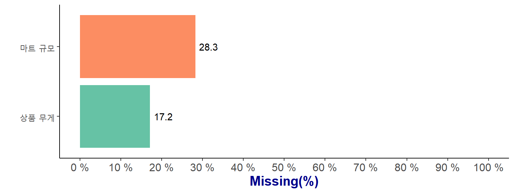
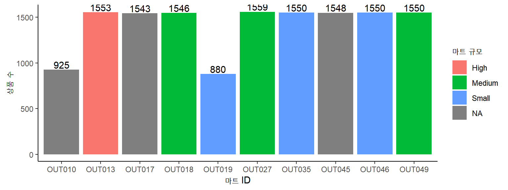
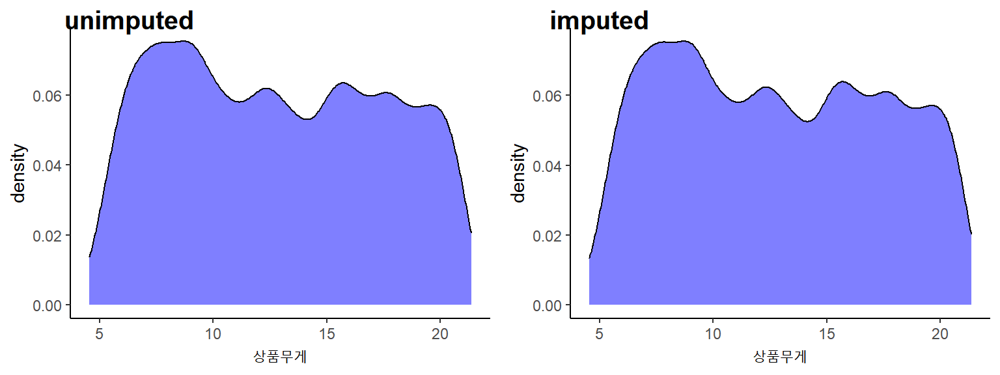
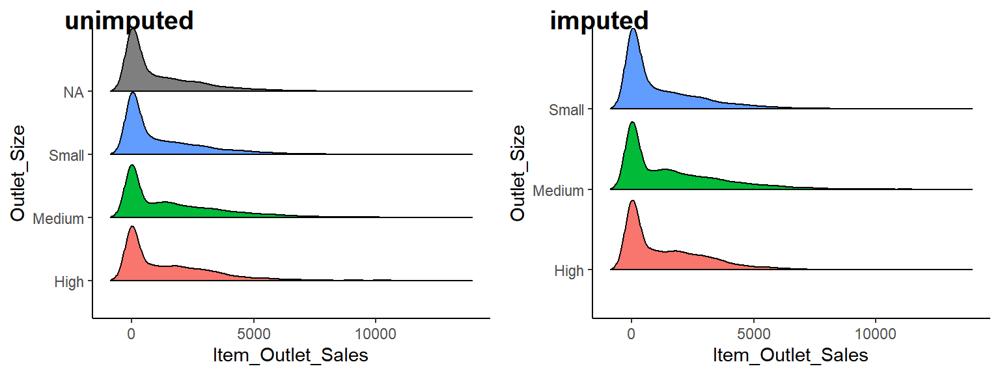
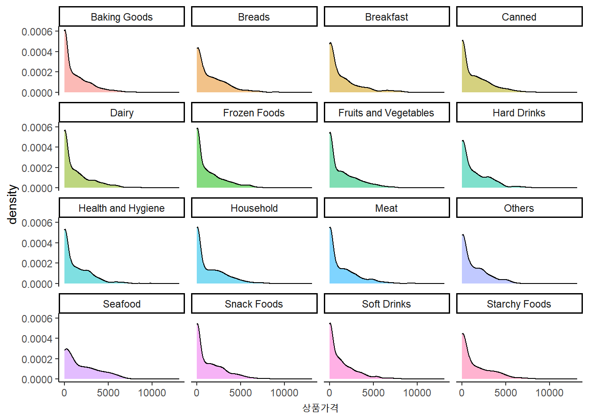
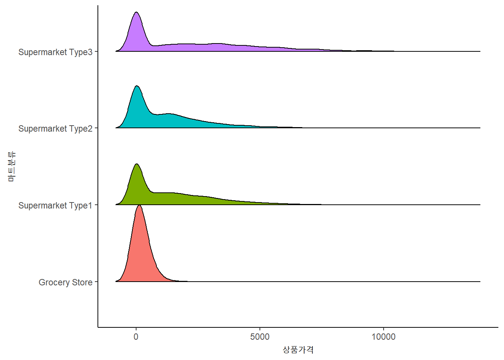
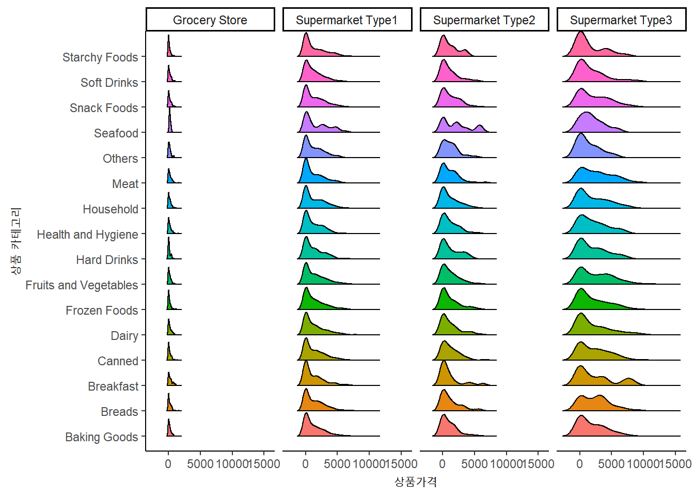

library(tidyverse)
library(kableExtra)
library(naniar)
library(DescTools)
library(cowplot)
library(ggridges)
library(caret)
library(RColorBrewer)빅마트의 상품 가격 예측
본 프로젝트에서 사용된 패키지입니다. 분석을 진행하면서 함수에 대한 간략한 설명도 진행하겠습니다.
Description
kaggle에 등록되어 있는 데이터셋 BIG MART SALES PREDICTION 으로 BigMart의 상품 데이터를 이용하여 가격을 예측하는 것이 목적입니다. 데이터는 각 다른 도시에 있는 10개의 마트의 1559개 상품에 대한 정보로 2013년에 수집되었습니다.
train <- read_csv("Train_Sales.csv")
test <- read_csv("Test_Sales.csv")
test$Item_Outlet_Sales <- rep(0,nrow(test))
# 결측값 대치 전 분포를 비교하기 위한 데이터셋
un_big <- rbind(train, test)
big <- rbind(train, test)
train |> dim(); test |> dim()[1] 8523 12[1] 5681 12- train set과 test set은 각 8523행, 5681행으로 이루어져 있습니다.
- 전처리를 진행하기 위해 두 데이터를 결합(= big)하고 진행하도록 하겠습니다.
- 독립변수(X)의 설명은 다음과 같습니다.
| 변수명 | 변수설명 | 유형 |
|---|---|---|
| Item_Identifier | 상품 ID | 연속형 |
| Item_Weight | 상품 무게 | 연속형 |
| Item_Fat_Content | 지방 함량 수준 | 범주형 |
| Item_Visibility | 점유공간(%) | 연속형 |
| Item_Type | 상품 카테고리 | 범주형 |
| Item_MRP | 최대 소매가 | 연속형 |
| Outlet_Identifier | 마트 ID | 범주형 |
| Outlet_Establishment_Year | 마트 설립연도 | 연속형 |
| Outlet_Size | 마트 규모 | 범주형 |
| Outlet_Location_Type | 마트가 위치한 도시 규모 | 범주형 |
| Outlet_Type | 마트 분류 | 범주형 |
| Item_Outlet_Sales | 상품가격 - 반응변수(Y) | 연속형 |
Pre-processing
변수들의 결측값 현황을 살펴보고, 결측값이 있는 변수에 대해 탐색해보겠습니다.
colSums(is.na(big)) %>%
kbl(col.names = "결측값 수") %>%
kableExtra::kable_styling(bootstrap_options = "striped", full_width = F)| 결측값 수 | |
|---|---|
| Item_Identifier | 0 |
| Item_Weight | 2439 |
| Item_Fat_Content | 0 |
| Item_Visibility | 0 |
| Item_Type | 0 |
| Item_MRP | 0 |
| Outlet_Identifier | 0 |
| Outlet_Establishment_Year | 0 |
| Outlet_Size | 4016 |
| Outlet_Location_Type | 0 |
| Outlet_Type | 0 |
| Item_Outlet_Sales | 0 |
{kableExtra}패키지는 knitr::kable()으로 생성된 기본적인 Table에 다양한 Style을 제공해주기 위한 패키지입니다.
데이터에서 결측값은 상품 무게(Item_Identifier)와 마트 규모(Outlet_Size)변수에서 발생하였으며, 각 변수에서 2439개/4016개의 결측값을 확인하였습니다.
전체 데이터에서 결측값의 비율을 계산해보았습니다.
custom_palette <- brewer.pal(3,"Set2")[1:2]
theme_set(theme_classic())
naniar::miss_var_summary(big) %>%
filter(n_miss != 0) %>%
ggplot(aes(variable, pct_miss)) +
geom_col(aes(fill = variable)) +
geom_text(aes(label = round(pct_miss, 1)), hjust = -0.2) +
scale_x_discrete(label = c("상품 무게", "마트 규모")) +
scale_y_continuous(limits = c(0, 100), breaks = c(seq(0, 100, 10)),
labels = c(paste(seq(0, 100, 10), "%"))
) +
scale_fill_manual(values = custom_palette) +
coord_flip() +
theme(legend.position = "none",
axis.text = element_text(size = 12),
axis.title = element_text(face = "bold", hjust = 0.5,
size = 15, color = "darkblue")) +
labs(x = "", y = "Missing(%)")
{naniar}패키지는 missing data에 대해 요약 및 시각화 기능을 제공해줍니다.
데이터 전체에서 상품 무게(Item_Identifier)와 마트 규모(Outlet_Size)의 결측값 비율은17.2%/28.3% 를 차지하고 있습니다.
Outlet_Size(마트 규모)에 대한 결측값 대치를 수행합니다.
theme_set(theme_classic())
big %>%
select(Outlet_Identifier:Item_Outlet_Sales) %>%
group_by(Outlet_Identifier, Outlet_Size) %>%
count() %>%
ggplot(aes(Outlet_Identifier, n)) +
geom_col(aes(fill = Outlet_Size)) +
geom_text(aes(label = n), vjust = -0.2) +
#scale_y_discrete(labels = rep("",4)) +
labs(x = "마트 ID", y = "상품 수", fill = "마트 규모")
10개 마트(Outlet_Identifier)의 각 규모(Outlet_Size)를 보여주기 위한 그림으로 y축은 마트에서 보유한 상품의 수를 나타냅니다. 이 때, 상품은 진열된 상품의 수 이므로 중복된 상품이 포함됩니다.
위 그림에서 3개 마트(OUT010, OUT017, OUT045)에 대한 규모 정보가 누락된 것을 확인하였습니다. 상대적으로 마트규모가 작을 때 상품 수가 작은 것으로 보아, OUT10 마트의 규모는 Small일 것이라고 추측할 수 있습니다.
big %>%
select(Outlet_Identifier:Item_Outlet_Sales) %>%
group_by(Outlet_Type, Outlet_Size) %>%
count() %>%
kbl(col.names=c("마트 분류", "마트 규모", "상품 수")) %>%
kable_styling(bootstrap_options = "striped", full_width = F) %>%
column_spec(2, color = spec_color(c(1,2,1,1,1,2,1,1)))| 마트 분류 | 마트 규모 | 상품 수 |
|---|---|---|
| Grocery Store | Small | 880 |
| Grocery Store | NA | 925 |
| Supermarket Type1 | High | 1553 |
| Supermarket Type1 | Medium | 1550 |
| Supermarket Type1 | Small | 3100 |
| Supermarket Type1 | NA | 3091 |
| Supermarket Type2 | Medium | 1546 |
| Supermarket Type3 | Medium | 1559 |
누락된 마트 규모를 추측하기 위해 다른 각도인 마트분류별로 살펴보겠습니다.
마트분류(Outlet_Type)에 따른 마트규모(Outlet_Size)의 상품 수를 보면 Grocery Store과 Supermarket Type1에서 NA가 발생한 것을 알 수 있습니다. 이를 통해 Grocery Store의 경우 마트규모가 모두 작을 것이라고 생각할 수 있고, Supermarket Type1의 경우 마트규모가 다양하여 좀 더 살펴보아야 할 것 같습니다.
마트가 위치한 도시규모(Outlet_Location_Type)변수를 추가로 고려하여 가설을 내리고 탐색해보도록 하겠습니다.
가설 1 : 마트분류에 따라 규모가 제한될 수 있다. 이를 테면, 동네 슈퍼와 같은 경우 보편적으로 작게 운영되기 때문이다.
가설 2 : 같은 맥락에서 마트가 위치한 도시규모와 마트분류에 따라 규모가 제한될 수 있다.
검정 : 두 이산형 변수의 연관성 척도인 Cramer’s V로 판단 \[Cramer's \; V = \sqrt{\frac{\chi^2}{N \times (min(m,p)-1)}}\]
#마트 규모와 마트 분류의 상관계수
tab <- ftable(big$Outlet_Size, big$Outlet_Type)
DescTools::CramerV(tab)[1] 0.5527004#마트 규모와 마트가 위치한 도시규모의 상관계수
tab2 <- ftable(big$Outlet_Size, big$Outlet_Location_Type)
DescTools::CramerV(tab2)[1] 0.5787653- Cramer’s V가 각 0.5849, 0.5310 값을 가지며 두 변수가 중간 정도의 상관이 있다고 할 수 있습니다.
(1) Grocery Store
big[which(big$Outlet_Type=="Grocery Store" & is.na(big$Outlet_Size)), "Outlet_Size"] <- "Small"- 앞서 마트분류(Outlet_Type)에 따른 마트규모(Outlet_Size)의 분포를 보면 마트분류(Outlet_Type)가 Grocery인 경우, NA값을 제외한 모든 데이터의 마트규모(Outlet_Size)는 모두 Small이므로 결측값을 Small로 대치하였습니다.
(2) Supermarket Type1
big %>%
filter(Outlet_Type == "Supermarket Type1", Outlet_Location_Type == "Tier 2") %>%
group_by(Outlet_Type, Outlet_Location_Type, Outlet_Size) %>%
summarise(n()) %>%
kbl(col.names = c("마트분류", "마트가 위치한 도시규모", "마트규모","n")) %>%
kable_styling(bootstrap_options = "striped", full_width = F)| 마트분류 | 마트가 위치한 도시규모 | 마트규모 | n |
|---|---|---|---|
| Supermarket Type1 | Tier 2 | Small | 1550 |
| Supermarket Type1 | Tier 2 | NA | 3091 |
같은 접근방식으로 마트분류(Outlet_Type)가 Supermarket Type1인 경우, 마트규모(Outlet_Size)는 3종류 모두 존재하기 때문에 추가적으로 마트가 위치한 도시규모 변수(Outlet_Location_Type)를 살펴보았습니다.
Supermarket Type1에서 결측이 발생한 데이터는 모두 Tier2에 해당하며, Tier2인 도시규모에서는 Supermarket Type1의 규모는 모두 Small임을 알 수 있었습니다.
big[which(big$Outlet_Type=="Supermarket Type1" & is.na(big$Outlet_Size)), "Outlet_Size"] <- "Small"
#colSums(is.na(big))- 따라서, Supermaket Type1에서 발생한 NA는 Small로 대치하였습니다.
Item_Weight(상품 무게)에 대한 결측값 대치를 수행합니다.
#무게가 NA인 상품명
NA_Item_Identifier <- big %>%
filter(is.na(Item_Weight)) %>%
select(Item_Identifier) %>%
pull()
#동일 제품의 평균을 구함
weight_mean <- big %>%
filter(!is.na(Item_Weight)) %>%
filter(Item_Identifier %in% NA_Item_Identifier) %>%
group_by(Item_Identifier) %>%
summarise(mean = mean(Item_Weight)) - 무게가 결측인 상품 id를 추출한 후, 값이 존재하는 동일 상품에 대해 평균무게를 구합니다.
| 상품 ID | Mean |
|---|---|
| DRA12 | 11.600 |
| DRA24 | 19.350 |
| DRA59 | 8.270 |
| DRB01 | 7.390 |
| DRB13 | 6.115 |
- 무게(Item_Weight)가 결측인 상품은 총 1559개입니다(5개만 보여짐).
#상품 ID에 대한 평균무게로 결측값 대치
big[which(is.na(big$Item_Weight)), "Item_Weight"] <- big %>%
filter(is.na(Item_Weight)) %>%
select(Item_Identifier, Item_Weight) %>%
left_join(weight_mean, by = "Item_Identifier") %>%
select(Item_Weight = mean)
colSums(is.na(big)) Item_Identifier Item_Weight Item_Fat_Content
0 0 0
Item_Visibility Item_Type Item_MRP
0 0 0
Outlet_Identifier Outlet_Establishment_Year Outlet_Size
0 0 0
Outlet_Location_Type Outlet_Type Item_Outlet_Sales
0 0 0 - 동일한 상품에 대한 평균 무게로 결측값을 대치하였으며, 더 이상의 결측이 없음을 확인하였습니다.
결측값 대치 전/후의 분포를 비교해봅시다.
theme_set(theme_classic())
#Item_Weight 분포
unimputed_wt <- ggplot(un_big, aes(x=Item_Weight)) + #결측값 대치 전
geom_density(fill="blue", alpha=.5) +
geom_line(stat="density") +
labs(x = "상품무게")
imputed_wt <- ggplot(big, aes(x=Item_Weight)) + #결측값 대치 후
geom_density(fill="blue", alpha=.5) +
geom_line(stat="density") +
labs(x = "상품무게")
cowplot::ggdraw() + # ggarrange(unimputed_wt, imputed_wt){ggpubr}
draw_plot(unimputed_wt, x = 0, y = 0, width = .5, height = .95) +
draw_plot(imputed_wt, x = 0.5, y = 0, width = .5, height = .95) +
draw_plot_label(label = c("unimputed", "imputed"), size = 15,
x = c(0, 0.5), y = c(1, 1))
{cowplot}패키지는 ggplot에 대한 간단한 추가 기능을 제공해줍니다.
Item_Weight(상품 무게)의 결측값 대치 전/후 분포이며, 분포에 큰 차이가 보이지 않습니다.
theme_set(theme_classic())
# Outlet_Size에 따른 가격 분포
unimputed_size <- ggplot(un_big, aes(x = Item_Outlet_Sales, y = Outlet_Size, fill = Outlet_Size)) + # 결측값 대치 전
ggridges::geom_density_ridges2(scale=1) +
theme(legend.position = "none")
imputed_size <- ggplot(big, aes(x = Item_Outlet_Sales, y = Outlet_Size, fill = Outlet_Size)) + # 결측값 대치 후
geom_density_ridges2(scale=1) +
theme(legend.position = "none")
ggdraw() + # ggarrange(unimputed_size, imputed_size)
draw_plot(unimputed_size, x = 0, y = 0, width = .5, height = .95) +
draw_plot(imputed_size, x = 0.5, y = 0, width = .5, height = .95, ) +
draw_plot_label(label = c("unimputed", "imputed"), size = 15,
x = c(0, 0.5), y = c(1, 1))
{ggridge}패키지는 geom_ridgeline과 geom_density_ridges 함수를 제공하는데, 전자는 높이(height)에 따른 선을 그리며, 후자는 데이터의 밀도함수를 추정하여 그려줍니다.
Outlet_Size(마트 규모)의 결측값 대치 전/후 분포이며, 분포에 큰 차이가 보이지 않습니다.
EDA
- 탐색적 자료 분석을 통해 인사이트를 얻어보도록 하겠습니다.
theme_set(theme_classic())
ggplot(big, aes(x=Item_Outlet_Sales, fill = Item_Type)) +
geom_density( alpha=.5) +
facet_wrap( ~ Item_Type) +
scale_y_continuous(labels = scales::comma) +
labs(x = "상품가격") +
theme(legend.position = "none")
상품 카테고리별 가격의 분포를 나타낸 그림으로 모두 왼쪽(낮은 가격)으로 치우쳐진 형태를 가집니다.
Seafood의 경우 다른 종류들보다 가격대가 조금 높은 것으로 보입니다.
theme_set(theme_classic())
ggplot(big, aes(x = Item_Outlet_Sales, y = Outlet_Type, fill = Outlet_Type)) +
geom_density_ridges2(scale=1) +
labs(x = "상품가격", y = "마트분류") +
theme(legend.position = "none")
- Outlet_Type(마트 분류)별 가격분포를 보면 Grocery Store는 다른 Supermarket보다 가격대가 낮은 상품을 많이 파는 것을 알 수 있습니다.
theme_set(theme_classic())
ggplot(big, aes(x = Item_Outlet_Sales, y = Item_Type, fill = Item_Type)) +
geom_density_ridges2(scale=1) +
theme(legend.position = "none")+
facet_grid(~ Outlet_Type) +
labs(x = "상품가격", y = "상품 카테고리")
- 위의 결과와 마찬가지로 Grocery Store에서 특히 가격대가 낮으며, supermarket 1 < supermarket 2 < supermarket 3 으로 가격대의 분포가 넓어지고 있습니다. 즉, supermarket 3의 마트 규모는 백화점, 대형마트 정도일 것으로 추측할 수 있습니다.
Modeling
데이터에 대해 모델링을 수행해봅시다.
dim(train)[1] 8523 12pro_train <- big %>% slice(1:nrow(train))
pro_test <- big %>% slice(nrow(train)+1:n())- 전처리 후, train set과 test set을 나눠줍니다.
- slice 함수는 데이터의 위치정보를 사용하여 행을 추출할 수 있도록 도와줍니다.
# Standardization
pre <- caret::preProcess(pro_train, method = c("center", "scale"))
scale_train <- predict(pre, pro_train)
pre2 <- preProcess(pro_test, method = c("center", "scale"))
scale_test <- predict(pre, pro_test)- Ridge와 Lasso 회귀는 독립변수의 scale에 영향을 받기 때문에 변수를 표준화시켜 주어야합니다.
#train
dmy <- dummyVars(Item_Outlet_Sales ~ ., data=scale_train[,-c(1,7)], fullrank=TRUE) # train
dmy_train <- data.frame(predict(dmy, newdata=scale_train))
dmy_train$Item_Outlet_Sales <- train$Item_Outlet_Sales
dmy_train %>%
head(10) |>
kbl() %>%
kable_styling(bootstrap_options = "striped", full_width = F)| Item_Weight | Item_Fat_ContentLF | Item_Fat_Contentlow.fat | Item_Fat_ContentLow.Fat | Item_Fat_Contentreg | Item_Fat_ContentRegular | Item_Visibility | Item_TypeBaking.Goods | Item_TypeBreads | Item_TypeBreakfast | Item_TypeCanned | Item_TypeDairy | Item_TypeFrozen.Foods | Item_TypeFruits.and.Vegetables | Item_TypeHard.Drinks | Item_TypeHealth.and.Hygiene | Item_TypeHousehold | Item_TypeMeat | Item_TypeOthers | Item_TypeSeafood | Item_TypeSnack.Foods | Item_TypeSoft.Drinks | Item_TypeStarchy.Foods | Item_MRP | Outlet_Establishment_Year | Outlet_SizeHigh | Outlet_SizeMedium | Outlet_SizeSmall | Outlet_Location_TypeTier.1 | Outlet_Location_TypeTier.2 | Outlet_Location_TypeTier.3 | Outlet_TypeGrocery.Store | Outlet_TypeSupermarket.Type1 | Outlet_TypeSupermarket.Type2 | Outlet_TypeSupermarket.Type3 | Item_Outlet_Sales |
|---|---|---|---|---|---|---|---|---|---|---|---|---|---|---|---|---|---|---|---|---|---|---|---|---|---|---|---|---|---|---|---|---|---|---|---|
| -0.7692004 | 0 | 0 | 1 | 0 | 0 | -0.9706752 | 0 | 0 | 0 | 0 | 1 | 0 | 0 | 0 | 0 | 0 | 0 | 0 | 0 | 0 | 0 | 0 | 1.7473513 | 0.1395326 | 0 | 1 | 0 | 1 | 0 | 0 | 0 | 1 | 0 | 0 | 3735.1380 |
| -1.4967248 | 0 | 0 | 0 | 0 | 1 | -0.9080580 | 0 | 0 | 0 | 0 | 0 | 0 | 0 | 0 | 0 | 0 | 0 | 0 | 0 | 0 | 1 | 0 | -1.4889359 | 1.3340245 | 0 | 1 | 0 | 0 | 0 | 1 | 0 | 0 | 1 | 0 | 443.4228 |
| 0.9957995 | 0 | 0 | 1 | 0 | 0 | -0.9568612 | 0 | 0 | 0 | 0 | 0 | 0 | 0 | 0 | 0 | 0 | 1 | 0 | 0 | 0 | 0 | 0 | 0.0100396 | 0.1395326 | 0 | 1 | 0 | 1 | 0 | 0 | 0 | 1 | 0 | 0 | 2097.2700 |
| 1.3617141 | 0 | 0 | 0 | 0 | 1 | -1.2816826 | 0 | 0 | 0 | 0 | 0 | 0 | 1 | 0 | 0 | 0 | 0 | 0 | 0 | 0 | 0 | 0 | 0.6600108 | 0.0200834 | 0 | 0 | 1 | 0 | 0 | 1 | 1 | 0 | 0 | 0 | 732.3800 |
| -0.8488407 | 0 | 0 | 1 | 0 | 0 | -1.2816826 | 0 | 0 | 0 | 0 | 0 | 0 | 0 | 0 | 0 | 1 | 0 | 0 | 0 | 0 | 0 | 0 | -1.3991375 | -1.2938577 | 1 | 0 | 0 | 0 | 0 | 1 | 0 | 1 | 0 | 0 | 994.7052 |
| -0.5335084 | 0 | 0 | 0 | 0 | 1 | -1.2816826 | 1 | 0 | 0 | 0 | 0 | 0 | 0 | 0 | 0 | 0 | 0 | 0 | 0 | 0 | 0 | 0 | -1.4386493 | 1.3340245 | 0 | 1 | 0 | 0 | 0 | 1 | 0 | 0 | 1 | 0 | 556.6088 |
| 0.1671105 | 0 | 0 | 0 | 0 | 1 | -1.0347518 | 0 | 0 | 0 | 0 | 0 | 0 | 0 | 0 | 0 | 0 | 0 | 0 | 0 | 1 | 0 | 0 | -1.3381597 | -1.2938577 | 1 | 0 | 0 | 0 | 0 | 1 | 0 | 1 | 0 | 0 | 343.5528 |
| 1.3186653 | 0 | 0 | 1 | 0 | 0 | 1.1887678 | 0 | 0 | 0 | 0 | 0 | 0 | 0 | 0 | 0 | 0 | 0 | 0 | 0 | 1 | 0 | 0 | -0.5336097 | -1.5327561 | 0 | 1 | 0 | 0 | 0 | 1 | 0 | 0 | 0 | 1 | 4022.7636 |
| 0.7159824 | 0 | 0 | 0 | 0 | 1 | -0.9582752 | 0 | 0 | 0 | 0 | 0 | 1 | 0 | 0 | 0 | 0 | 0 | 0 | 0 | 0 | 0 | 0 | -0.7068669 | 0.4978801 | 0 | 0 | 1 | 0 | 1 | 0 | 0 | 1 | 0 | 0 | 1076.5986 |
| 1.3617141 | 0 | 0 | 0 | 0 | 1 | 0.5488131 | 0 | 0 | 0 | 0 | 0 | 1 | 0 | 0 | 0 | 0 | 0 | 0 | 0 | 0 | 0 | 0 | 0.7519642 | 1.0951261 | 0 | 0 | 1 | 0 | 1 | 0 | 0 | 1 | 0 | 0 | 4710.5350 |
#test
dmy2 <- dummyVars(Item_Outlet_Sales ~ ., data=scale_test[,-c(1,7)], fullrank=TRUE) # test
dmy_test <- data.frame(predict(dmy2, newdata=scale_test))
dmy_test$Item_Outlet_Sales <- test$Item_Outlet_Sales
dmy_test %>%
head(10) |>
kbl() %>%
kable_styling(bootstrap_options = "striped", full_width = F) | Item_Weight | Item_Fat_ContentLF | Item_Fat_Contentlow.fat | Item_Fat_ContentLow.Fat | Item_Fat_Contentreg | Item_Fat_ContentRegular | Item_Visibility | Item_TypeBaking.Goods | Item_TypeBreads | Item_TypeBreakfast | Item_TypeCanned | Item_TypeDairy | Item_TypeFrozen.Foods | Item_TypeFruits.and.Vegetables | Item_TypeHard.Drinks | Item_TypeHealth.and.Hygiene | Item_TypeHousehold | Item_TypeMeat | Item_TypeOthers | Item_TypeSeafood | Item_TypeSnack.Foods | Item_TypeSoft.Drinks | Item_TypeStarchy.Foods | Item_MRP | Outlet_Establishment_Year | Outlet_SizeHigh | Outlet_SizeMedium | Outlet_SizeSmall | Outlet_Location_TypeTier.1 | Outlet_Location_TypeTier.2 | Outlet_Location_TypeTier.3 | Outlet_TypeGrocery.Store | Outlet_TypeSupermarket.Type1 | Outlet_TypeSupermarket.Type2 | Outlet_TypeSupermarket.Type3 | Item_Outlet_Sales |
|---|---|---|---|---|---|---|---|---|---|---|---|---|---|---|---|---|---|---|---|---|---|---|---|---|---|---|---|---|---|---|---|---|---|---|---|
| 1.6953421 | 0 | 0 | 1 | 0 | 0 | -1.1350710 | 0 | 0 | 0 | 0 | 0 | 0 | 0 | 0 | 0 | 0 | 0 | 0 | 0 | 1 | 0 | 0 | -0.5320040 | 0.1395326 | 0 | 1 | 0 | 1 | 0 | 0 | 0 | 1 | 0 | 0 | 0 |
| -0.9844443 | 0 | 0 | 0 | 1 | 0 | -0.5369287 | 0 | 0 | 0 | 0 | 1 | 0 | 0 | 0 | 0 | 0 | 0 | 0 | 0 | 0 | 0 | 0 | -0.8618695 | 1.0951261 | 0 | 0 | 1 | 0 | 1 | 0 | 0 | 1 | 0 | 0 | 0 |
| 0.3715922 | 0 | 0 | 1 | 0 | 0 | 0.6481452 | 0 | 0 | 0 | 0 | 0 | 0 | 0 | 0 | 0 | 0 | 0 | 1 | 0 | 0 | 0 | 0 | 1.6179994 | 0.0200834 | 0 | 0 | 1 | 0 | 0 | 1 | 1 | 0 | 0 | 0 | 0 |
| -1.1964595 | 0 | 0 | 1 | 0 | 0 | -0.9834453 | 0 | 0 | 0 | 0 | 0 | 0 | 0 | 0 | 0 | 0 | 0 | 0 | 0 | 1 | 0 | 0 | 0.2254709 | 1.0951261 | 0 | 0 | 1 | 0 | 1 | 0 | 0 | 1 | 0 | 0 | 0 |
| 0.1563483 | 0 | 0 | 0 | 0 | 1 | 1.0168508 | 0 | 0 | 0 | 0 | 1 | 0 | 0 | 0 | 0 | 0 | 0 | 0 | 0 | 0 | 0 | 0 | 1.4971838 | -1.5327561 | 0 | 1 | 0 | 0 | 0 | 1 | 0 | 0 | 0 | 1 | 0 |
| -0.6615785 | 0 | 0 | 0 | 0 | 1 | -0.0448628 | 0 | 0 | 0 | 0 | 0 | 0 | 1 | 0 | 0 | 0 | 0 | 0 | 0 | 0 | 0 | 0 | -0.3828753 | -0.0993658 | 0 | 0 | 1 | 1 | 0 | 0 | 0 | 1 | 0 | 0 | 0 |
| 1.3940007 | 0 | 0 | 0 | 0 | 1 | 0.3191900 | 1 | 0 | 0 | 0 | 0 | 0 | 0 | 0 | 0 | 0 | 0 | 0 | 0 | 0 | 0 | 0 | -1.4594827 | 1.3340245 | 0 | 1 | 0 | 0 | 0 | 1 | 0 | 0 | 1 | 0 | 0 |
| -0.7918010 | 0 | 0 | 1 | 0 | 0 | -0.9758073 | 1 | 0 | 0 | 0 | 0 | 0 | 0 | 0 | 0 | 0 | 0 | 0 | 0 | 0 | 0 | 0 | -0.9624009 | -1.5327561 | 0 | 1 | 0 | 0 | 0 | 1 | 0 | 0 | 0 | 1 | 0 |
| -1.4138559 | 0 | 0 | 0 | 0 | 1 | 1.1092216 | 0 | 0 | 0 | 0 | 0 | 0 | 0 | 0 | 0 | 0 | 0 | 0 | 0 | 1 | 0 | 0 | -0.7266019 | 0.4978801 | 0 | 0 | 1 | 0 | 1 | 0 | 0 | 1 | 0 | 0 | 0 |
| -1.4827339 | 0 | 0 | 1 | 0 | 0 | -1.1712431 | 1 | 0 | 0 | 0 | 0 | 0 | 0 | 0 | 0 | 0 | 0 | 0 | 0 | 0 | 0 | 0 | 0.7370465 | 1.0951261 | 0 | 0 | 1 | 0 | 1 | 0 | 0 | 1 | 0 | 0 | 0 |
- train 데이터와 test 데이터의 범주형 변수를 더미화시켜 줍니다. 1번째, 7번째 변수는 상품ID와 마트ID로 더미화를 하지 않아도 됩니다.
- Ridge와 Lasso를 적합한 후 최적의 모수를 탐색합니다.
# 최적의 lambda
library(glmnet)
lambdas <- 10^seq(-3,3,length=50)
set.seed(1023)
cv_ridge <- cv.glmnet(model.matrix(Item_Outlet_Sales ~ ., dmy_train)[,-1], dmy_train$Item_Outlet_Sales,
alpha = 0, lambda = lambdas, standardize = FALSE) # ridge : alpha=0
cv_ridge$lambda.1se #1 se rule lambda[1] 25.59548MSE를 가장 작게 해주는 최적의 lambda값을 찾기 위해 0.03 ~ 3000 사이의 모수 50개를 이용하여 cross-validation을 수행하였습니다.
최종 모수는 1 se rule을 적용한 lambda값(25.595)을 선택하였습니다.
(p.s) Breiman (1984) suggested that in actual practice, it’s common to instead use the smallest tree within 1 standard error (SE) of the minimum CV error (this is called the 1-SE rule).
# 최적의 lambda로 재적합
set.seed(1023)
ridge_reg <- glmnet(model.matrix(Item_Outlet_Sales~.,dmy_train)[,-1],
dmy_train$Item_Outlet_Sales, alpha = 0, lambda = cv_ridge$lambda.1se)
#coef(ridge_reg,s = "lambda.min")lambdas <- 10^seq(3, -3, length = 50)
# Setting alpha = 1 implements lasso regression
set.seed(1023)
cv_lasso <- cv.glmnet(model.matrix(Item_Outlet_Sales~.,dmy_train)[,-1], dmy_train$Item_Outlet_Sales, alpha = 1, lambda = lambdas, standardize = FALSE)
# 최적의 lambda 찾기
cv_lasso$lambda.1se[1] 19.30698# 최적의 lambda로 재적합
library(glmnet)
set.seed(1023)
lasso_model <- glmnet(model.matrix(Item_Outlet_Sales~.,dmy_train)[,-1], dmy_train$Item_Outlet_Sales, alpha = 1, lambda = cv_lasso$lambda.1se)
#coef(lasso_model,s = "lambda.min")Prediction and Evaluation
- test set에 대해 예측값을 구하고 평가를 수행합니다.
set.seed(1023)
# test mse
predictions_test <- predict(ridge_reg, s = cv_ridge$lambda.1se, newx = model.matrix(Item_Outlet_Sales ~ .,dmy_test)[,-1]) # predict value
eval_results(submission$Item_Outlet_Sales, predictions_test, pro_test) RMSE Rsquared
1 339.8704 0.9307555- Ridge 회귀로 예측한 결과, test MSE는 339.87, 정확도는 93% 으로 측정되었습니다.
# test mse
predictions_test <- predict(lasso_model, s = cv_lasso$lambda.1se, newx = model.matrix(Item_Outlet_Sales~.,dmy_test)[,-1]) # predict value
eval_results(submission$Item_Outlet_Sales, predictions_test, test) RMSE Rsquared
1 334.5676 0.9328994Lasso 회귀로 예측한 결과, test MSE는 334.57, 정확도는 93.3% 으로 측정되었습니다.
Ridge와 Lasso의 성능은 거의 비슷하지만, Lasso의 test MSE가 좀 더 낮게 추정됨을 알 수 있습니다.